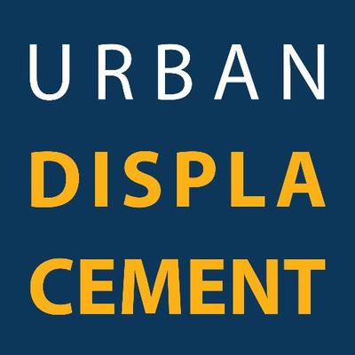

Right To The City is an anti-gentrification organization that focuses on creation petitions, organizaing marches, and bringing awarness to those displaced in the gentrification process.

The Guardian is a newspaper that provides updated on displacements and the negative affects gentrification has on our neighborhoods.

Urban Displacment is a group that advocates for those who have lost their homes due to displacment after their neighborhoods have undergone gentrification.